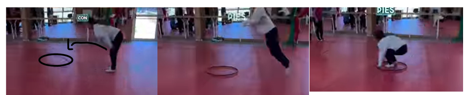
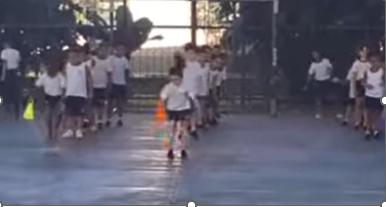
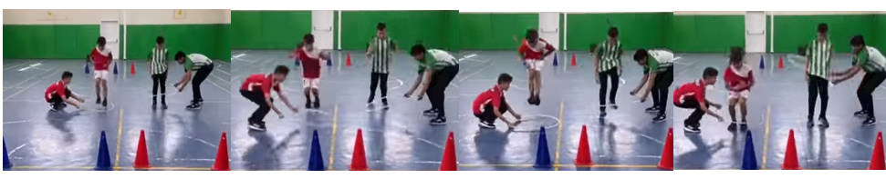
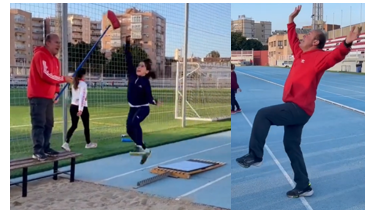
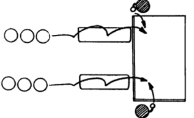

Texto
SALTO DE LONGITUD EN GIMNASIO
Material: depende de los grupos. Ejemplo 4 grupo. 12 aros, 4 conos grandes, varios conos si no hay grandes pequeños, elástico (red o cuerda), 2 balones de goma espuma. 2 picas
Trabajo en olas dependiendo de colchonetas quitamiedos que tengamos
1. El grupo se divide la mitad en cada lado. Un compañero coge el aro y lo lanza tan lejos como crea que puede llegar con un salto. Cuando está dentro del aro lo pasa por encima suyo y lo lanza de nuevo, salta a caer dentro y así hasta que llegue a su compañero del otro lado.

2. El primero del grupo da un salto y deja el cono a donde llegó con su salto. El segundo coge el cono y desde ese sitio realiza otro salto dejándolo en donde llegó. Así hasta que pasen todos. A ver hasta dónde llega el equipo. Puede ser también hasta llegar a una línea cuantos del equipo necesitan para cumplir el objetivo

3. Dos compañeros/as sujetan un aro y lo colocan a una distancia prudente para que se pueda llegar. Una vez colocado a ras del suelo saltamos a llegar al aro. El compañero/a que sujeta el aro lo pasará por dentro hasta sacarlo por la cabeza y lo aleja para repetir la secuencia. Así hasta que lleguemos al final.

4) Se pueden colocar varios aros 5,6,7 etc. A ver cuál es el integrante del grupo que llega más lejos saltando. Saltamos con una pierna y caemos con las dos

5. Si le pido ayuda a alguien puedo poner un elástico o una pica con algo en la punta lo más alto posible para que salten hacia arriba con un pie y una mano estirada. Buscamos sobre todo que el/la atleta elija pie de salto. Con cuál se eleva más con derecha o izquierda.

6. Un banco sueco o parte alta de un plinto y una colchoneta quita miedo (de las grandes) al final. Un compañero/a con un balón a la altura de la colchoneta. Vamos caminando y en el momento de saltar el compañero/a nos lanza la pelota, debiendo cogerla y lanzarla hacia delante antes de caer en la colchoneta. Una vez que le pillamos el truco si podemos hacerlo más rápido mejor

7. Colocamos un aro a una distancia de la colchoneta quita miedos (grande) y empezamos a trabajar el salto y caída. No puede saltar fuera del aro. Luego que lo practican un par veces vemos si hay que alejarlo o acercarlo. Lo ideal es que se animen a caer de culo en la colchoneta, pero si no pasa no hay problemas.
Al final los pongo a todos sobre una línea del final del gimnasio. Y les voy haciendo preguntas de teoría el que la responde bien da un salto. Así hasta ver cuál es el primero que llegue al medio.